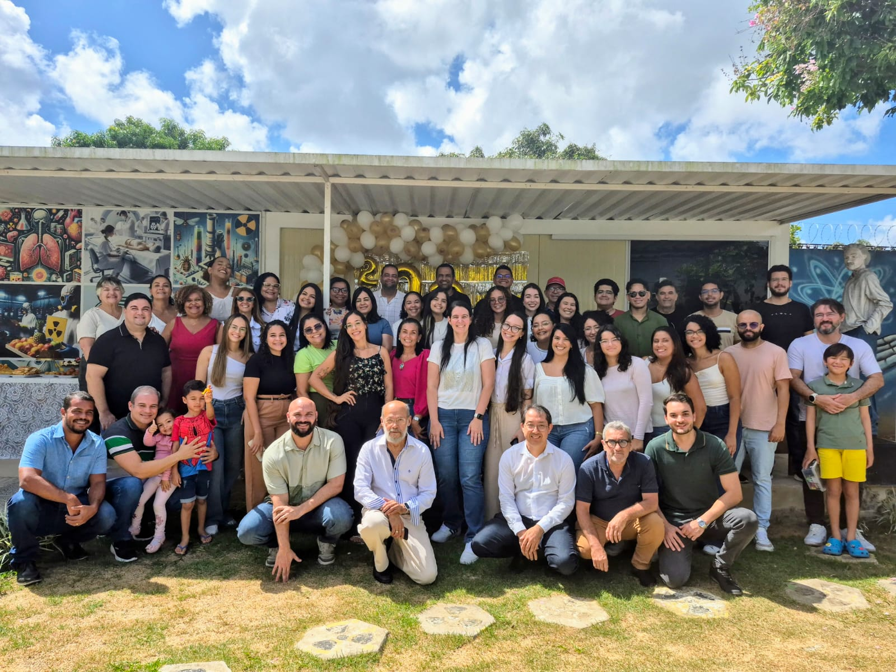
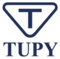
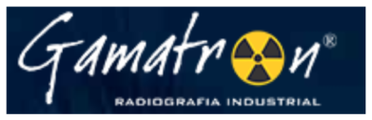
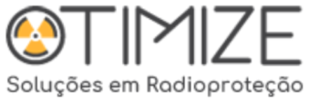
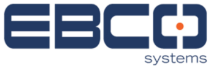
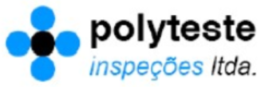
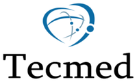

LMRI / Quem somos
Quem somos
Desde 1997 calibrando dosímetros e instrumentos de medida da radiação ionizante de clínicas, hospitais e indústrias da região e do país.
Parte da rede brasileira
de metrologia.
O LMRI foi implantado no Departamento de Energia Nuclear da UFPE em 1997, com apoio financeiro da Agência Internacional de Energia Atômica (IAEA), pelos projetos BRA 47 e 48. Esses projetos criaram no Brasil uma rede de metrologia das radiações ionizantes formada pelos laboratórios do IPEN/SP, do CDTN/MG, do IRD/RJ e do DEN/UFPE.
O laboratório trata a qualidade como base do seu trabalho: atende aos requisitos da norma ABNT NBR ISO/IEC 17025:2017 e mantém a equipe atualizada nos temas da metrologia das radiações ionizantes.
- 1997
- Implantação do LMRI no DEN/UFPE, com apoio da IAEA.
- 2002
- Autorização do CASEC/IRD/CNEN para calibrar instrumentos de radioproteção.
- 2022
- Padrão de referência recalibrado no LNMRI.


Equipe.
Atividades técnicas, gestão da qualidade e apoio administrativo, como pede a ISO/IEC 17025.
- Coordenação
- Helen Khoury
- Vice-coordenação
- Vinícius Saito M. de Barros
- Gerência técnica
- Viviane Asfora
- Gerência técnica substituta
- Itayana de Albuquerque Lima
- Gerência da qualidade
- Péricles Wanderley Machado
- Gerência da qualidade substituta
- André Luiz T. de França
- Equipe técnica
- Dayana Mirella do Nascimento
- Elias José de Souza
- José Fernando Oliveira de Souza
- Equipe administrativa
- Ana Dayse Alves Zidanes
- Egita Antonina dos Santos
- Assistência eletrônica
- Charles Nilton


Do laboratório para os serviços de saúde e a indústria.
Além da calibração, a equipe acompanha a avaliação de equipamentos de radiodiagnóstico, de tomógrafos e mamógrafos, e participa de cursos e eventos do GDOIN.
Conhecer o GDOINClientes usuais.
Empresas e instituições que calibram instrumentos no LMRI.





